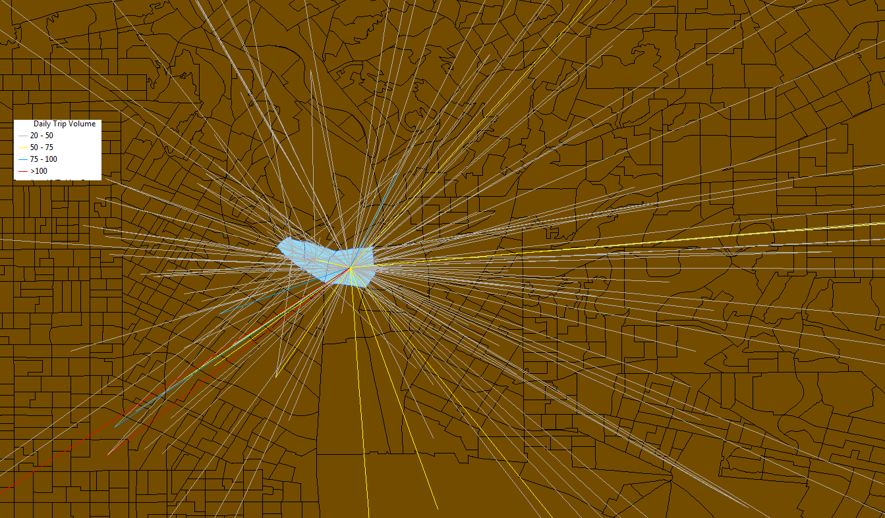
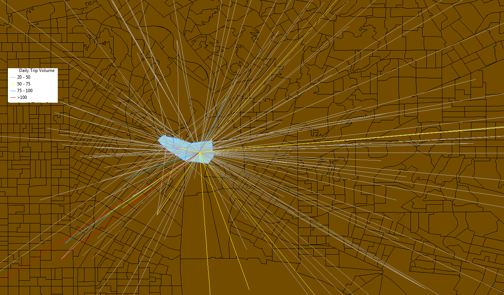

熊猫数据分析工作室 (English Version)
熊猫数据分析工作室由从事多年的数据统计分析、计算机科学、工程应用的专家组成的团队。
在商务智能、智能定位、医疗数据分析、振动数据分析方面尤为擅长。 主要的技术特长包括：
- 大数据Hadoop生态系统， 包括：Apache Drill, Hive
- 采用Python、R、SAS、Matlab等进行统计分析和数据挖掘
- 采用Tableau, QlikView, ArcGIS or Open source GIS 进行数据的可视化
- 传统的面向关系型数据以及NoSQL数据库如Mongodb等数据库构建经验
- 对分布式计算框架Mesos、Spark、Storm均有工程经验
我工作室是专门为科研单位和公司提供数据分析服务支持的团队， 团队提供如软件开发、数据质量控制、统计分析方法、机器学习算法、数据可视化、ETL、数据库和数据仓库开发、高性能分布式集群搭建与应用的技术支持和顾问。


 
